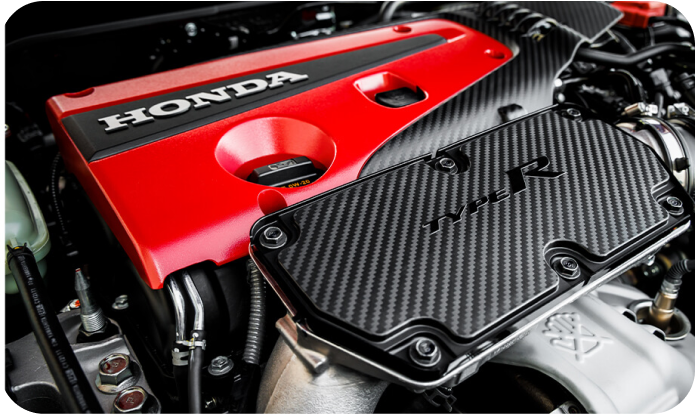
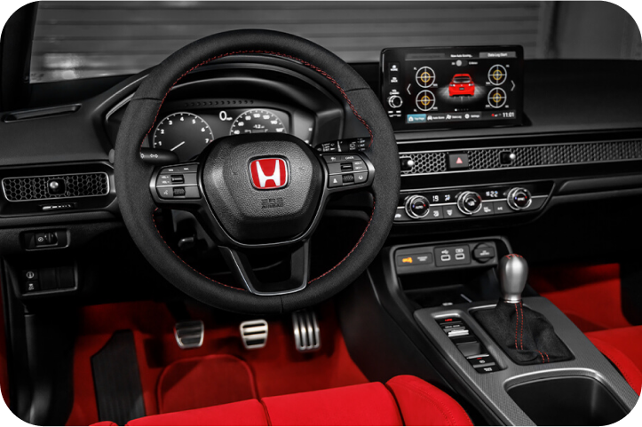

O câmbio do Civic Type R é uma transmissão manual de seis velocidades, projetada para proporcionar uma experiência de condução esportiva e envolvente. Com engates curtos e precisos, esse câmbio é especialmente apreciado por entusiastas de carros esportivos.
O motor do Civic Type R é um 2.0 litros turbo de quatro cilindros, capaz de produzir impressionantes 306 cavalos de potência e 400 Nm de torque. Ele possui uma configuração de alta performance, com tecnologias avançadas para garantir uma experiência de direção emocionante
O painel do Civic Type R é projetado para refletir a natureza esportiva e dinâmica do veículo. Ele apresenta um layout limpo e focado no motorista, com instrumentos de fácil leitura e informações essenciais para a condução esportiva, como o indicador de rotação, velocímetro e outras informações relevantes. Além disso, o painel pode incluir tecnologias de conectividade e entretenimento para complementar a experiência de direção
